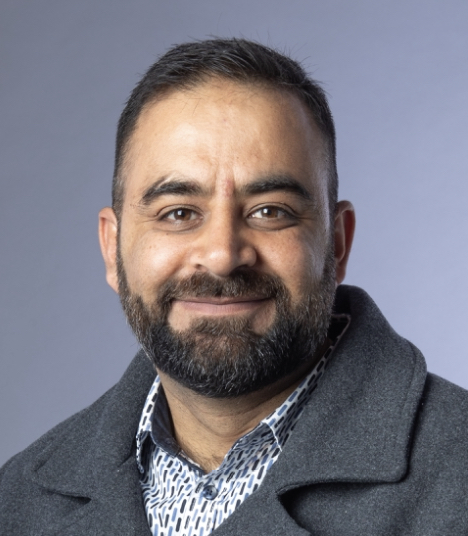

Our team consists of a the principal investigator (lead researcher) who is been helped by many senior academics affiliated with public universities of New Zealand (University of Canterbury, Victoria University of Wellington, and The University of Auckland). We come from different backgrounds, we are politically unaffiliated, and we do not represent or work for any community, religious, or political organisations. Our main motivation is to conduct good science and share it with the New Zealand public and scientific community.
Team Members
Lead Researcher
I am Usman Afzali - a postdoctoral research fellow at University of Canterbury. I completed my PhD in psychology and am currently the principal investigator (lead researcher) of the three-year Muslim Diversity Study (since the beginning of 2023). Beside research, I teach psychology at University of Canterbury. I migrated to New Zealand in 2011 and have been living in Christchurch since. In the past few years, I have published several articles with New Zealand Attitudes and Values Study (NZAVS) focusing on Muslim perception and attitudes toward Muslims in New Zealand.

Why I do this research?
As a researcher and committed member of the New Zealand Muslim community, I recognise the importance of including our voices in discussions about New Zealand. This inspired me to develop a booster study to enhance Muslim representation in the New Zealand Attitudes and Values Study, since we are underrepresented at present. This limits the inferences we can make about how Muslims diversity, perception, flourishing, resilience, and meaning-making.
We are recruiting Muslim collaborators and Muslim research assistants from the community - which will not only help us work together with Muslim scholars, but also train a new cohort of Muslim researchers who might lead further Muslim-focused research, and help bring Muslims of New Zealand closer to science. This is what excites me, and this is why this project is so close to my heart.
More about me: Academic website, Institution Homepage
The Project Co-leaders
Professor Joseph Bulbulia
Prof Bulbulia is a professor of psychology and the director of Centre for Applied Cross-cultural Research at Victoria University of Wellington, and one of four senior managers of the NZAVS. He developed the first NZAVS studies on anti- Muslim prejudice in 2015 (with postdoc Dr John Shaver) and works with government and Muslim communities to promote acceptance. He co-directs this project, mentors Dr Afzali, promotes international outreach, and co-authors publications.
More about Prof Bulbulia: Academic website, Institution Homepage
Associate Professor Kumar Yogeeswaran
A/Prof Yogeeswaran is an associate professor of psychology at University of Canterbury. He has been an active member of the NZAVS advisory board since 2014, and published research using the NZAVS data, including several recent scientific articles relating to perception of the Muslim community. As a faculty member at the University of Canterbury, A/Prof Yogeeswaran will support and mentor the lead PI, Dr Afzali in the project.

More about A/Prof Yogeeswaran: Academic website, Institution Homepage
Professor Chris Sibley
Prof Chris Sibley is a professor of psychology at the University of Auckland, and NZAVS founder and lead manager. Prof Sibley is among the world’s top researchers in longitudinal psychology. He manages the collected NZAVS Flourishing Study data at the basic level, and will co-author publications with the team.
More about Prof Sibley: Institution Homepage
Lawyer Aarif Rasheed
Lawyer Mr. Aarif Abdul Rasheed is the head of the Muslim advocacy group, Just Community. He has been a close and valued NZAVS collaborator since 2016. Barrister Rasheed advises the team in this project and works with the Muslim community leadership and Research Assistants, particularly in Auckland and Wellington.
More about Mr. Rasheed: Homepage